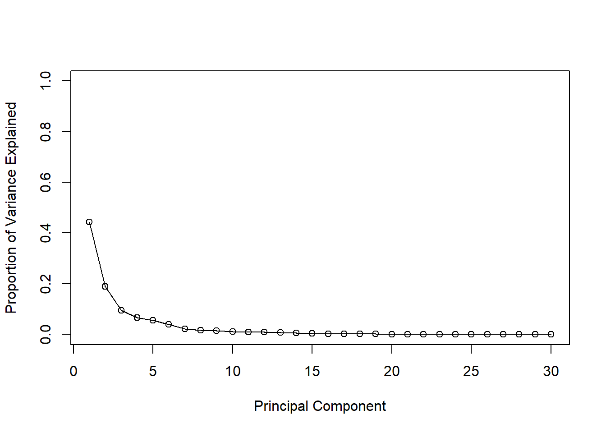
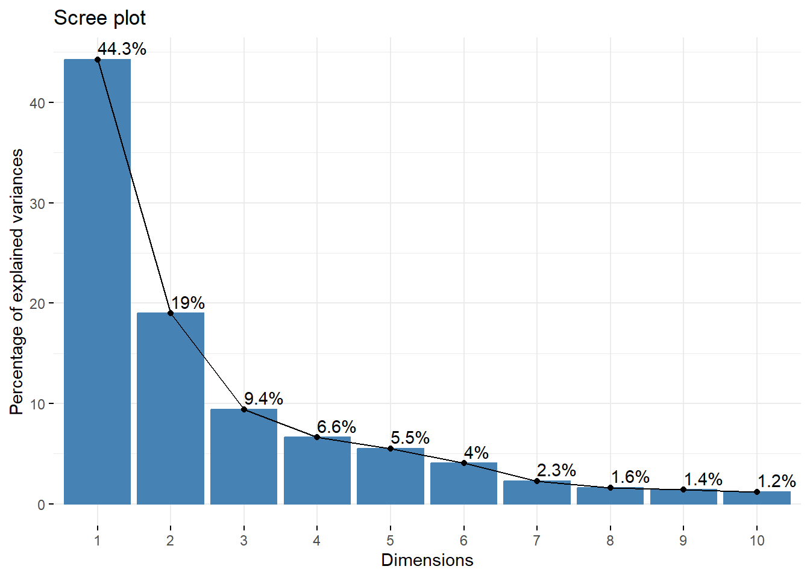

What is the mean of each dimension/column in mtscale?
round(apply(mtscale, 2, mean), 3)
mpg cyl disp hp drat wt qsec vs am gear carb
0 0 0 0 0 0 0 0 0 0 0
round(apply(mtscale, 2, sd), 3)
mpg cyl disp hp drat wt qsec vs am gear carb
1 1 1 1 1 1 1 1 1 1 1
Let’s plot mpg vs disp for both mtcars and after the scaled data in mtscale
library(ggplot2)
Warning: package 'ggplot2' was built under R version 4.3.3
ggplot(mtcars, aes(mpg, disp)) +geom_point()
ggplot(mtscale, aes(mpg, disp)) +geom_point()
pca2 <-prcomp(mtscale)biplot(pca2)
Breast Cancer FNA data
# Save your input data file into your Project directoryfna.data <-"WisconsinCancer.csv"# Complete the following code to input the data and store as wisc.dfwisc.df <-read.csv(fna.data, row.names=1)
View(wisc.df)# We can use -1 here to remove the first columnwisc.data <- wisc.df[,-1]diagnosis <-as.factor(wisc.df$diagnosis)
# Question 1nrow(wisc.df)
[1] 569
# Question 2length(grep('M', diagnosis)) # alternatively you can do table(wisc.df$diagnosis)
Q4. From your results, what proportion of the original variance is captured by the first principal components (PC1)? The proportion of variance captured by PC1 is 0.4427, or 44.27%.
Q5. How many principal components (PCs) are required to describe at least 70% of the original variance in the data? Three principal components are required to describe at least 70% of the original variance.
Q6. How many principal components (PCs) are required to describe at least 90% of the original variance in the data? Seven principal components are required to describe at least 90% of the original variance.
biplot(wisc.pr)
attributes(wisc.pr)
$names
[1] "sdev" "rotation" "center" "scale" "x"
$class
[1] "prcomp"
Q7. What stands out to you about this plot? Is it easy or difficult to understand? Why? This plot is very messy and hard to interpret. All of the data sits on top of itself and I feel like there are way too many arrows to make it feasible to comprehend.
My main PC result figure
# Scatter plot observations by components 1 and 2plot(wisc.pr$x[,1], wisc.pr$x[,2], col = diagnosis, xlab ="PC1", ylab ="PC2")
# Repeat for components 1 and 3plot(wisc.pr$x[,1], wisc.pr$x[,3], col = diagnosis, xlab ="PC1", ylab ="PC3")
Q8. Generate a similar plot for principal components 1 and 3. What do you notice about these plots? The points are pretty similarly clustered together but lower on the Y-axis.
# Create a data.frame for ggplotdf <-as.data.frame(wisc.pr$x)df$diagnosis <- diagnosis# Load the ggplot2 packagelibrary(ggplot2)# Make a scatter plot colored by diagnosisggplot(df) +aes(PC1, PC2, col=diagnosis) +geom_point()
# Calculate variance of each componentpr.var <- wisc.pr$sdev^2head(pr.var)
# Variance explained by each principal component: pvepve <- pr.var /sum(pr.var)# Plot variance explained for each principal componentplot(pve, xlab ="Principal Component", ylab ="Proportion of Variance Explained", ylim =c(0, 1), type ="o")

# Alternative scree plot of the same data, note data driven y-axisbarplot(pve, ylab ="Precent of Variance Explained",names.arg=paste0("PC",1:length(pve)), las=2, axes =FALSE)axis(2, at=pve, labels=round(pve,2)*100 )
## ggplot based graph#install.packages("factoextra")library(factoextra)
Warning: package 'factoextra' was built under R version 4.3.3
Welcome! Want to learn more? See two factoextra-related books at https://goo.gl/ve3WBa
fviz_eig(wisc.pr, addlabels =TRUE)

wisc.pr$rotation[,1]["concave.points_mean"]
concave.points_mean
-0.2608538
Q9. For the first principal component, what is the component of the loading vector (i.e. wisc.pr$rotation[,1]) for the feature concave.points_mean? This tells us how much this original feature contributes to the first PC. The component is approximately -0.261, which means that it contributes roughly 26.1% to the first PC.
# Scale the wisc.data data using the "scale()" functiondata.scaled <-scale(wisc.data)data.dist <-dist(data.scaled)wisc.hclust <-hclust(data.dist, 'complete')
plot(wisc.hclust)abline(h=19, col="red", lty=2)
Q10. Using the plot() and abline() functions, what is the height at which the clustering model has 4 clusters? The model has 4 clusters at approximately height 19.
Q11. OPTIONAL: Can you find a better cluster vs diagnoses match by cutting into a different number of clusters between 2 and 10? How do you judge the quality of your result in each case? I tried a few numbers, and h=15 is shown above. I don’t think it’s any better because a better result to me would have less false positives/negatives in other clusters.
Q12. Which method gives your favorite results for the same data.dist dataset? Explain your reasoning. My favorite method is ward.D2 because the result seems to be the neatest.
# Plot using our re-ordered factor plot(wisc.pr$x[,1:2], col=g)
## Use the distance along the first 7 PCs for clustering i.e. wisc.pr$x[, 1:7]wisc.pr.hclust <-hclust(dist(wisc.pr$x[,1:7]), method="ward.D2")wisc.pr.hclust.clusters <-cutree(wisc.pr.hclust, k=2)table(wisc.pr.hclust.clusters, diagnosis)
diagnosis
wisc.pr.hclust.clusters B M
1 28 188
2 329 24
table(wisc.hclust.clusters, diagnosis)
diagnosis
wisc.hclust.clusters B M
1 12 165
2 2 5
3 343 40
4 0 2
Q16. Which of these new patients should we prioritize for follow up based on your results? We should prioritize patient 2 as their tumor is well within the malignant cluster, whereas patient 1 is within the benign cluster.